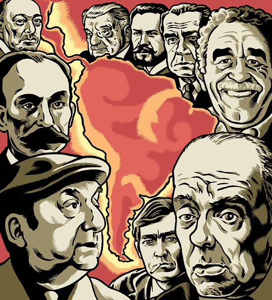
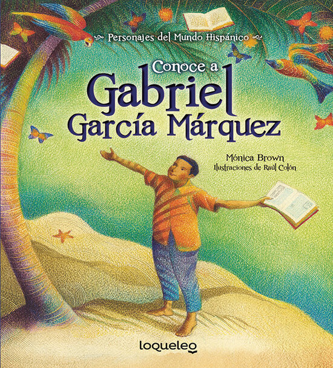

La Novela Latinoamericana Contemporanea
La novela latinoamericana, empieza desde el siglo XX, cuando realmente aparece como un genero o una rama mas de la literatura mundial escrita posteriormente a la segunda mitad del siglo XIX hasta la actualidad.
Gema Michelle Pisco
LEER
Cuentos Jorge Luis Borges
Jorge Francisco Isidoro Luis Borges fue un escritor de cuentos, ensayos y poemas argentino, extensamente considerado una figura clave tanto para la literatura en habla hispana como para la literatura universal.
Gema Michelle Pisco
LEER

Gabriel Garcia Marquez
Gabriel Garcia Marquez fue la figura fundamental del llamado Boom de la literatura hispanoamericana, editorial que, en la decada de 1960, dio proyeccion mundial a las ultimas hornadas de narradores del continente.
Gema Michelle Pisco
LEER